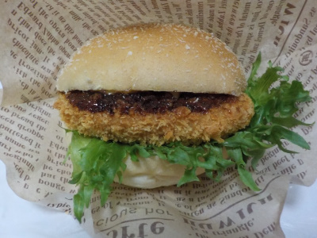
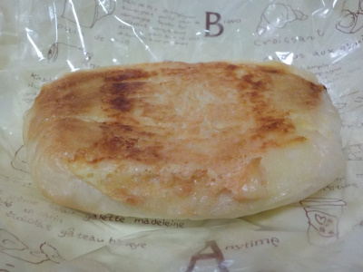
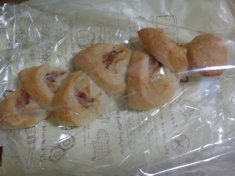
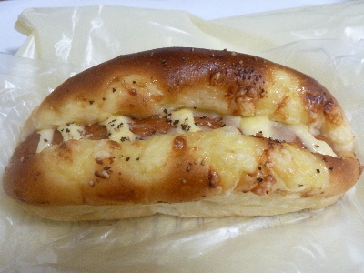
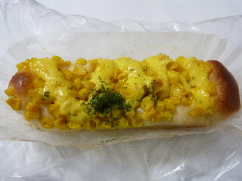
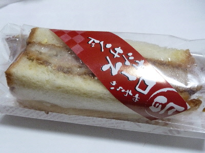
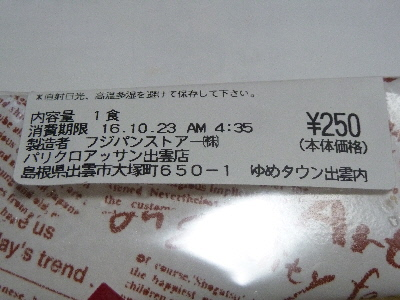
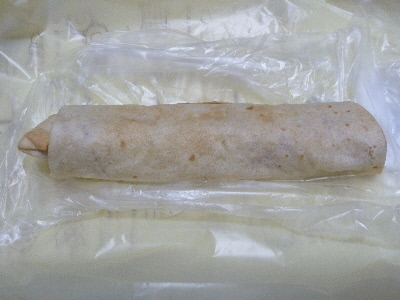
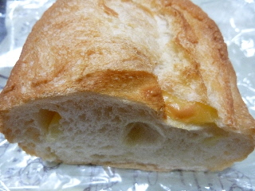
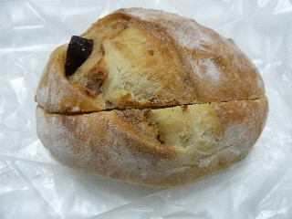

パリクロアッサン出雲店のサクサクコロッケバーガー
2019/05/22
コロッケバーガー美味しかったです。

ソース味じゃなくて、コロッケに味が付いてて好きな味でした。

こっちのパンはあまり好みじゃなかったです。
買うときに、同じ種類のパンの大きさがマチマチでどれを選ぼうか迷いました。
手前にあった小さ目のものを選んだのが失敗だったかも。
レジの行列に割り込むおばさんがいました。見たくなかったな。
島根県出雲市大塚町650-1
2019/05/22
コロッケバーガー美味しかったです。

ソース味じゃなくて、コロッケに味が付いてて好きな味でした。

こっちのパンはあまり好みじゃなかったです。
買うときに、同じ種類のパンの大きさがマチマチでどれを選ぼうか迷いました。
手前にあった小さ目のものを選んだのが失敗だったかも。
レジの行列に割り込むおばさんがいました。見たくなかったな。
2018/11/07
夕方安売りしていたので値段の高いパンを買っちゃいました。
安いと思うと必要なくても買っちゃいますね。

ちょっと柔らかいベーコンエピでした。
ベーコンとコショウ味が効いてて、しっかり味の惣菜パンでした。
おつまみにピッタリです。
2017/10/25
クロアッサンで税別105円セールをしていたので、値段の高いパンを買ってみました。

ジャーマンフランクです。
パンに挟まれててよく見えませんが、中心に大きいソーセージが入っています。
ソーセージの味が濃く塩分も多目だったので、ビール系飲料ピッタリのパンだと思いました。
今度買う時は、ゆめタウンで一緒にビール系飲料も買って帰ろうと思いました。
（たまにはビール買いたいな。）
2017/05/23
パリクロアッサンのたっぷりコーン
コーンパンは美味しいですよね。

コーンたっぷりでいいですね。
私はコーンは好きなので、もっと大粒のコーンだともっと美味しいんだろうなーなんて思いながら食べました。
贅沢を行ってはいけないですね。
2016/10/22
カツサンドって高級なのでなかなか買えないです。

でも夕方安売りしてたので買っちゃいました。
お肉は普通に美味しいなー。

パリクロアッサンがフジパン系のパン屋さんとは知ってたけど、社名がフジパンストア㈱なんですね。
なんか大手な感じの名前ですね。
2016/09/18
春巻きのようなパンですね。

薄いパンの中にはウインナーがはいっていました。
パン生地が少ないので、ウインナーをしっかり味わいながらいただきました。
2015/10/22
夕方安売りしていたので、パンを買って帰りました。

安売りなので、普段値段が高くて大きいパンを買ってみました。
普通にフランスパンの味なんですけど、パン自体が美味しかったです。
パンが美味しいっていいなー。
2015/04/22
ぱっと見た感じ、あんまりいちじくが入っていなさそうです。
でも中にはイチジクのドライフルーツが沢山入ってました。
なので、どっしり感がありました。

練乳はそんなに強くないので、イチジク味を楽しめました。
2014/12/17
パリクロアッサンのお父さんのえだまめチーズ
2014/12/03
パリクロアッサンのごろごろアップルパイ
2014/07/14
パリクロアッサンのチリコンカンドッグ
2014/02/06
パリクロアッサンのチーズチキンカツバーガー
2013/11/28
パリクロアッサンのくるみとベーコンのちぎりパン
2013/06/23
パリクロアッサンのお買い得な長いパン。
2013/05/03
パリクロアッサンで大きいパンを買いました。
2013/04/01
パリクロアッサンのスパイシー竜田揚げドッグ
2012/11/22
パリクロアッサンのふっくらしたメロンパン
2012/03/12
パリクロアッサンのかりんとうまんじゅう
2012/03/12
パリクロアッサンのハニートースト
2011/11/22
パリクロアッサンのハムチーズドーナッツ
2011/07/26
パリクロアッサンで105円のケーキが販売していました。
2011/04/21
夜はパリクロで買い物
2011/01/02
パリクロアッサンの福袋
パリクロアッサンの練乳いちじく
パリクロアッサンの田舎パン
パリクロアッサンの生キャラメリーゼ
パリクロアッサンのジューシーチキンの南蛮サンド
パリクロアッサンのクルミ
ゆめタウン出雲のパン屋さん。